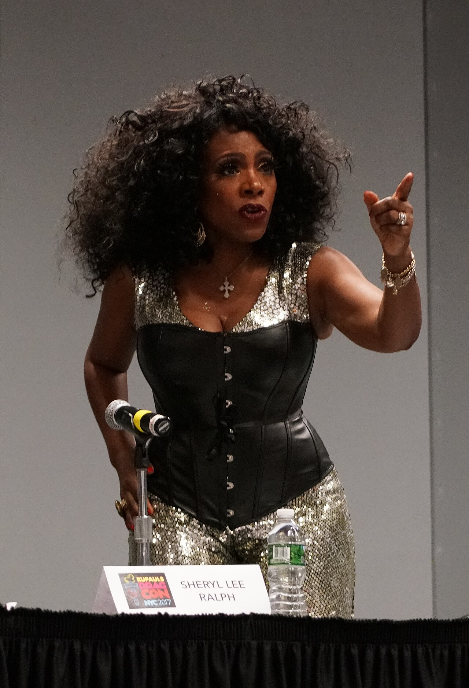

C
Claudette Banks
“Child, please.（得了吧，别闹了）”
一句话：最会穿的酷奶奶；把“体面”穿成“时髦”，用温柔的语气说最狠的真话。
鲜明特色：Taraji Red 红 varsity + 大银灰卷发 + 金框猫眼 + 红唇。
形象资产位 · 待出图
一个黑人奶奶 + 一个白人 gay 大叔；TikTok / IG 主。

TikTok 120 万粉 / 1600 万赞；IG 200 万粉 / 329 帖。近一周 13 条，约每天 2 条；最高 7250 万播放。
她证明：鲜明性格 + 全粉色 + 日常场景 + 有趣，TikTok 吃这一套。我们抄她的骨架，不抄她的脸、名字、原片。
“Child, please.（得了吧，别闹了）”
一句话：最会穿的酷奶奶；把“体面”穿成“时髦”，用温柔的语气说最狠的真话。
鲜明特色：Taraji Red 红 varsity + 大银灰卷发 + 金框猫眼 + 红唇。
“Hello, darling.（你好呀，亲爱的）”
一句话：gay uncle / 生活改造家；用审美和毒舌帮你把生活变好，但不 camp。
鲜明特色：Hot Pink 西装 + 玳瑁眼镜 + 银灰短发 + 盐胡椒胡。
Claudette：Taraji Red 红 varsity/bomber + 黑 cargo + 白 sneakers；大银灰卷发、金框猫眼、红唇。
Charlie：Hot Pink 西装 + 白 T + 黑裤 + 黑乐福鞋；玳瑁眼镜、银灰短发、盐胡椒胡。
Claudette：温柔、稳、有分寸、时髦、unbothered（从容）；soft power（柔性力量）。
Charlie：温暖、毒舌、审美权威、会自嘲；makeover（改造）uncle，不 camp（夸张表演型）。
Claudette：18-34 Black 年轻女性 + 所有想“现在就酷”的年轻人；也覆盖 25-45 女性。
Charlie：18-34 女性/LGBTQ+ + 所有喜欢 makeover 的年轻人；25-45 女性。
共同点：想要 富有、自在、幸福 的活法。
| 项 | 内容 |
|---|---|
| 名字/年龄 | Claudette Banks / 68 岁（1958 年生） |
| 外形 | 黑人女性；Sheryl 式大银灰蓬松大卷、金色/玳瑁大框猫眼、Taraji Red（塔拉吉红）、大金圈耳环/粗金链、Taraji 式红唇/莓色唇；红色 oversized varsity（棒球夹克）/bomber（飞行夹克）+ 黑色 wide-leg cargo（阔腿工装裤）+ 白色 chunky sneakers（厚底球鞋） |
| 身份 | 退休高中校长；从教 30 年；现在主持本地电台/播客《Ask Ms. Claudette》；社区长辈；丧偶 12 年；三个孩子、五个孙辈 |
| 背景 | 住亚特兰大；前廊、花园、家庭照片墙、电台间/麦克风；周末做一桌饭 |
| 性格 | 温柔是她最大的特色；稳、有耐心、护短、幽默、时髦、playful（俏皮）、unbothered（从容不被影响）；不吼，一句“Child, please（得了吧）”就够 |
| 说话 | 中低音、慢、清楚；短句；“Child, please.（得了吧）” / “Baby, listen.（宝贝，听我说）” / “Mm-hmm.（嗯哼）” |
| 内容 | 家庭/代际 30%；教育/人生/职场 25%；穿搭/美妆/头发 20%；美食/待客 15%；毒舌/POV 10% |
| 内容格式 | Ask Ms. Claudette（电台 call-in）；Nana Rates（奶奶点评）：穿搭/约会/公寓；Nana’s Rules（奶奶的规矩）；Get Ready with Nana（跟奶奶一起准备）；Nana vs Gen Z（奶奶对战 Z 世代） |
| 受众/品牌 | Black 年轻群体 + 所有年轻群体 + 25-45 女性/家庭；美妆（纹理头发/深肤色）、食品、服饰、家居 |
| 平台 | TikTok + IG 主；Facebook Reels 强；Pinterest 可选 |
| 禁忌 | 不碰政治/成人/医疗/金融；不真人名人 |
| 系列 | Ms. Claudette Says（Claudette 说）/ Nana’s Rules（奶奶的规矩）/ Nana Rates（奶奶点评） / Sunday Table（周日餐桌）/ Ask Ms. Claudette（问 Claudette） |
| 项 | 内容 |
|---|---|
| 名字/年龄 | Charles “Charlie” Whitmore / 58 岁 |
| 外形 | 白人男性；银灰短发、玳瑁细框眼镜、剪裁西装/开衫、亮粉口袋巾、金图章戒指；Hot Pink 西装/口袋巾；白 T + 黑裤；金图章戒指 |
| 身份 | 退休时尚编辑 / 室内设计师 / 生活改造家；已婚 18 年，丈夫 David 是建筑师；两只狗 |
| 背景 | 住纽约；公寓有艺术、书、酒吧车、狗；周末办晚餐 |
| 性格 | 俏、毒舌、时髦、温暖、护短；先损你，再真的帮你；Queer Eye（粉雄救兵）式 makeover（改造）uncle，不 camp（夸张表演型） |
| 说话 | 轻、快、清晰；“Hello, darling.（你好呀，亲爱的）” / “Absolutely not.（绝对不行）” / “We don’t do that.（我们不这样）” |
| 内容 | 情感/约会/红旗 30%；穿搭/家居 25%；待客/美食/酒 20%；文化/观点 15%；老公/狗/日常 10% |
| 内容格式 | Uncle Charlie Fixes（Charlie 大叔来改造）：穿搭/公寓/约会/晚餐；Absolutely Not（绝对不行）；How to Host（怎么请客）；Ask Uncle Charlie（问 Charlie 大叔） |
| 受众/品牌 | 女性/LGBTQ+（性少数群体）25-45 + Gen Z（Z 世代）；所有喜欢 makeover（改造）的年轻用户；家居、时尚、美妆、旅行、酒、宠物 |
| 平台 | TikTok + IG 主；Pinterest 强；YouTube Shorts 复用；X 可选 |
| 禁忌 | 不碰政治/成人；不真人名人 |
| 系列 | Uncle Charlie Fixes（Charlie 大叔来改造） / Uncle Charlie Says（Charlie 大叔说）/ Absolutely Not（绝对不行）/ How to Host（怎么请客）/ Ask Uncle Charlie（问 Charlie 大叔） |
Claudette 只参考两个人：Sheryl 负责脸/头发/年龄；Taraji 负责红唇/服装/气场。Charlie 只参考两个人：Bobby 负责脸；Tan 负责服装。耳饰、眼镜这些直接写进身份卡，不再单独找人参考。

椭圆脸、高颧骨、银灰大卷、glam 但亲和。让 68 岁可信，不是“扮老”。

正红唇、红西装/红晚装、敢说。让 Claudette 有“现在就想成为她”的气场。

长椭圆脸、深眼窝、强鼻梁、短胡、稳。Charlie 的脸/骨相 100% 取他。

合身剪裁、2-3 个色块、干净鞋、眼镜。Charlie 只取造型逻辑，不取脸/身份。
| 人物 | 是谁 | 参考什么 | 为什么 / 好处 | 不取什么 |
|---|---|---|---|---|
| Sheryl Lee Ralph | 69 岁，演员，Emmy 获奖；《Abbott Elementary》 | 脸/骨相、银灰大卷、年龄感 | 年龄对、银发有辨识度、glam 但亲和；让 68 岁可信，不是“扮老” | 不复制她的脸 |
| Taraji P. Henson | 55 岁，演员/歌手；《Empire》 | 正红唇、红西装/红晚装、气场 | 红唇+红装是强记忆点；气场让“温柔校长”不软塌 | 不取脸、不取发型 |
| 人物 | 是谁 | 参考什么 | 为什么 / 好处 | 不取什么 |
|---|---|---|---|---|
| Bobby Berk | 白人 gay，室内设计师；《粉雄救兵》 | 长椭圆脸、深眼窝、强鼻梁、短胡、稳 | 最接近“白人 gay 大叔”的脸；稳，不 camp；加龄+银发就是 58 岁 Charlie | 不取 Antoni/Anderson 的五官 |
| Tan France | 南亚裔 gay，造型师；《粉雄救兵》 | 合身剪裁、2-3 色块、干净鞋、眼镜 | 五个人里最会穿；Charlie 的造型直接有出处 | 不取脸/种族身份；不取高饱和芥末/钴蓝 |
| 层 | Claudette | Charlie |
|---|---|---|
| 脸 | Sheryl | Bobby |
| 头发 | Sheryl 的银灰大卷 | 银灰短发侧分（Bobby/Tan 的干净发型） |
| 红唇/气场 | Taraji | — |
| 服装 | Taraji 的红西装/红晚装 | Tan 的剪裁 + Hot Pink 西装 |
好处：两个人就够，不会四不像；有出处、能解释、不是拍脑袋；不复制真人脸，降低肖像权风险；商务/品牌能听懂“为什么是她/他”。
颜色：Claudette 只有 Taraji Red #C8102E；Charlie 只有 Hot Pink #E63980。不列其他配色。
来源页：黑人奶奶网红感参考、选角参考、Queer Eye 五人造型。仅内部设计参考，不是代言/合作；最终角色是虚构人物，不复制任何真人脸。
9:16、10-20 秒、近景、大字幕、一句话；前 3 秒给钩子。
鲜明性格 + 生活建议 + 日常场景 + 有趣；一个场景一句金句。
不抄脸/名字/原片；Claudette 和 Charlie 各自有独立的身份、语言、场景、审美。
联动栏目（可选）：Two Elders, One Question（两位长辈，同一个问题）
关系设定：不是一家人；是多年的损友——互相有点看不顺眼，但其实是好朋友。会互相拆台、互相调侃，最后又护短。
同一个问题，两个人各答一条；各自账号发，互相 duet/stitch（合拍/拼接），评论区互相拆台。
5 个问题：他没回消息怎么办？能不能原谅出轨？第一次见家长穿什么？怎么请客不翻车？什么时候该离开？
配比：各自 70% 单人，30% 联动；不做“一家人”，是“损友”。
| 平台 | 角色 | 谁 | 说明 |
|---|---|---|---|
| TikTok | 主战场 | 两人 | 起量、测试；各 70% 单人，30% 联动 |
| IG | 主阵地 | 两人 | 作品集、品牌名片、Reels/Stories |
| YouTube Shorts | 长尾 | 两人 | 复用 TikTok；后面做合集 |
| 增量 | Charlie 强，Claudette 可选 | Charlie：家居/穿搭；Claudette：穿搭/美食 | |
| Facebook Reels | 增量 | Claudette 强，Charlie 可选 | 家庭/奶奶人群 |
| X | 可选 | Charlie | 只发一句话/观点；不做主战场 |
顺序：先把 TikTok/IG 跑顺，再加 Pinterest + Facebook Reels；YouTube Shorts 同步复用；X 只给 Charlie，不投入。
每条都从粉奶奶的“鲜明性格 + 日常场景 + 一句金句”延展；这次不是只给标题，下面写清楚“这条具体讲什么”。
| # | 选题 | 这条讲什么 |
|---|---|---|
| 1 | Child, please（得了吧）：他不回消息，就是不想回 | 用校长语气拆穿“他太忙了”，教观众别替男人找借口。 |
| 2 | 我教了 30 年高中生，一眼看出谁在撒谎 | 讲三个撒谎的小动作，落到“看人别只听他说”。 |
| 3 | 周日餐桌：我奶奶的玉米面包 | 做一道家族玉米面包，讲奶奶当年怎么用一口锅养活一家人。 |
| 4 | 68 岁的自然头发 routine | 洗、护、造型三步，告诉观众银发也可以很有型。 |
| 5 | 红色就是我的颜色 | 为什么选红色、怎么戴金耳环，教观众找自己的“签名色”。 |
| 6 | 孙辈觉得我温柔，直到他们撒谎 | 讲一次抓包孙辈的小故事：温柔不等于没边界。 |
| 7 | 怎么请客不把自己累死 | 三个提前准备技巧：菜单、摆桌、能让客人帮忙的事。 |
| 8 | 56 岁丧偶后，我学会的事 | 独居、修灯泡、一个人吃饭；不悲情，讲独立。 |
| 9 | Ask Ms. Claudette：女儿的男朋友 | 读一个提问，给三条判断标准：尊重、稳定、对服务员的态度。 |
| 10 | 前廊夜话：给 25 岁的自己 | 一段人生建议：别急着结婚，先学会养活自己。 |
| 11 | 校长办公室最常听到的三句谎话 | 校园故事 + 识人；不点名，讲怎么听出不对劲。 |
| 12 | 我的花园：种花和养人一样 | 用园艺比喻耐心和边界；顺手剪一枝花回家。 |
| 13 | Black 家族聚餐，谁坐哪 | 讲家庭聚餐的座位和礼仪，轻松、不刻板。 |
| 14 | 68 岁第一次用手机拍穿搭 | 孙辈教她拍 OOTD，代际反差，笑点在她学得慢但很认真。 |
| 15 | 我为什么不再婚 | 独身选择；温柔但坚定，不劝别人学她。 |
| 16 | 怎么和成年子女说话 | 给父母三条建议：少建议、多问、别越界。 |
| 17 | 温柔不是好欺负 | 一条大字幕金句，讲她怎么温和地拒绝别人。 |
| 18 | 我的包里有什么 | 手帕、薄荷糖、全家福、老花镜；优雅奶奶的日常。 |
| 19 | 学生教我的事 | 30 年里一个学生改变她的故事；教育者的反哺。 |
| 20 | 周日晚上，一个人也要好好吃饭 | 独居仪式感：摆盘、点蜡烛、给自己倒一杯。 |
| # | 选题 | 这条讲什么 |
|---|---|---|
| 1 | Hello darling：这身衣服是在求救 | 看一张网友/路人穿搭，给一个具体改法；毒舌但有用。 |
| 2 | Absolutely not：40 岁还用 200 针床单 | 讲生活品味红线：床单、毛巾、杯子；不贵但要对的。 |
| 3 | 3 小时办一场晚餐 | 菜单、采购、摆桌；从超市到上桌的完整流程。 |
| 4 | 50 岁后约会，我忽略过的红旗 | 三个约会红旗 + 自己的故事；不点名、不扫射。 |
| 5 | 我和 David 的 18 年 | 稳定关系怎么吵架、怎么和好；丈夫 David 正常出现。 |
| 6 | 亮粉色就是我的颜色 | 大叔怎么穿粉：材质、场合；不是装嫩。 |
| 7 | 二手市场淘到的一角 | 淘一件旧物，改成一个家居角；预算低也能好看。 |
| 8 | Ask Uncle Charlie（问 Charlie 大叔）：他还关注前任 | 读一个问题，给判断：不是不能，是看他怎么处理。 |
| 9 | 每个家都该有的一样东西 | 讲灯光/镜子/酒吧车三选一；审美判断。 |
| 10 | 狗、咖啡、什么都不做的艺术 | 周末慢生活；狗出镜，讲“休息也是本事”。 |
| 11 | 怎么拒绝一个不喜欢的约会 | 三句礼貌但不留口子的台词；边界感。 |
| 12 | 第一次去男友家，带什么 | 礼物和礼仪：酒、花、甜点；不尴尬、不越界。 |
| 13 | 我的酒吧车怎么摆 | 酒、杯、装饰怎么搭；视觉强、可复制。 |
| 14 | 50 岁以后，怎么穿得像个大人 | 剪裁、颜色、面料；不装嫩，也不放弃。 |
| 15 | 如何判断一个人有没有品味 | 三个细节：鞋、表、说话方式；毒舌但讲理。 |
| 16 | 我和丈夫的约会之夜 | 长期关系的仪式感；餐厅或在家，重点在“留时间”。 |
| 17 | 一件黑色大衣的 5 种穿法 | 一个单品搭五套；适合秋冬、适合大叔。 |
| 18 | 朋友来家里，10 分钟能准备好的东西 | 快手待客：奶酪、橄榄、酒；不慌不忙。 |
| 19 | 我不再买的 5 样东西 | 消费观/审美：不囤、不买大 logo、不买难打理的。 |
| 20 | 给 30 岁的我一条建议 | 人生/感情建议；温柔收尾，不居高临下。 |